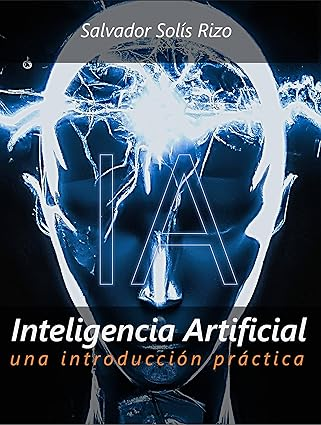
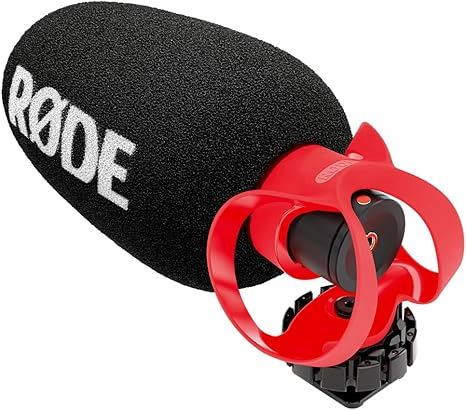
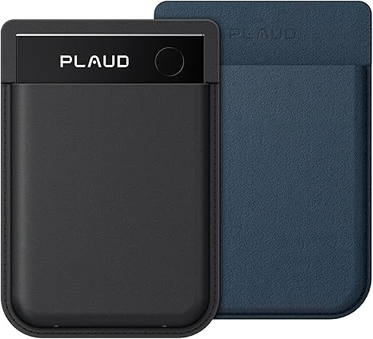
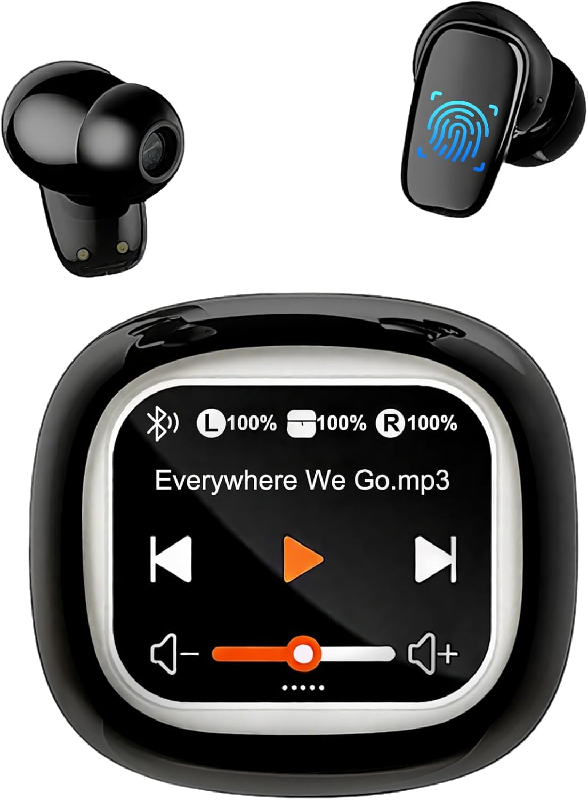
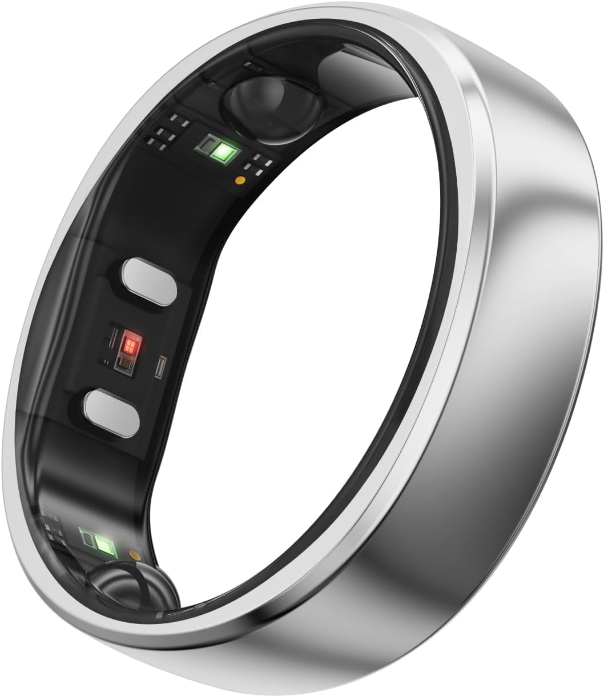
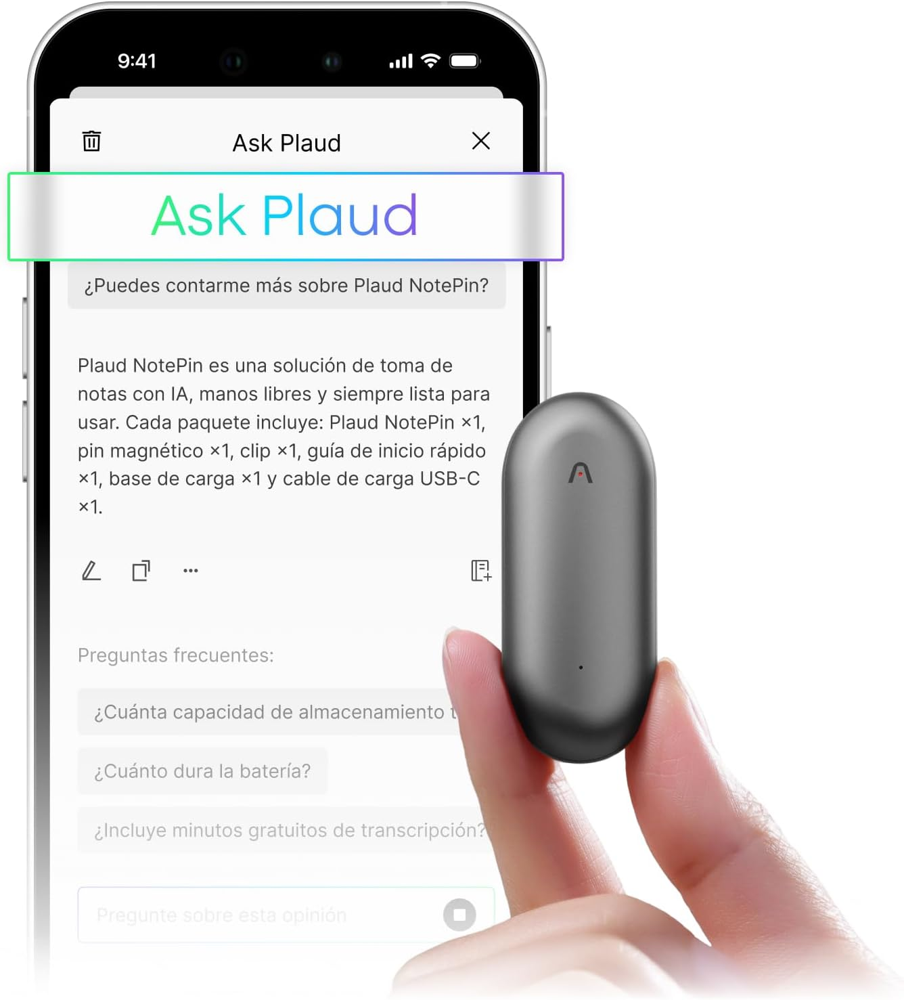
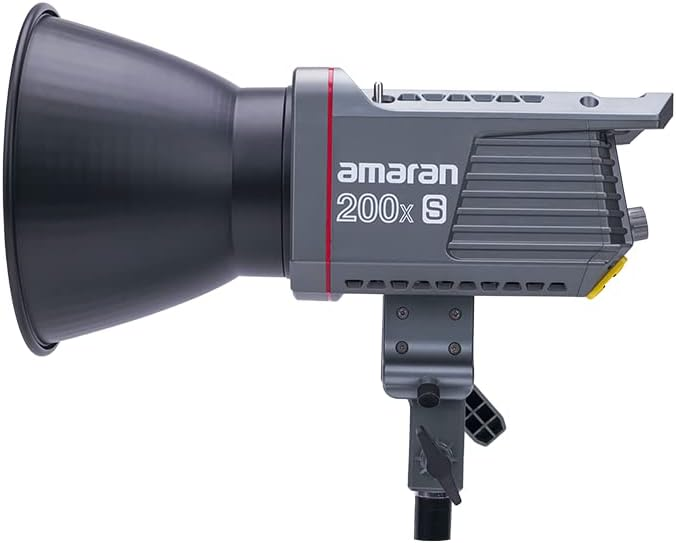
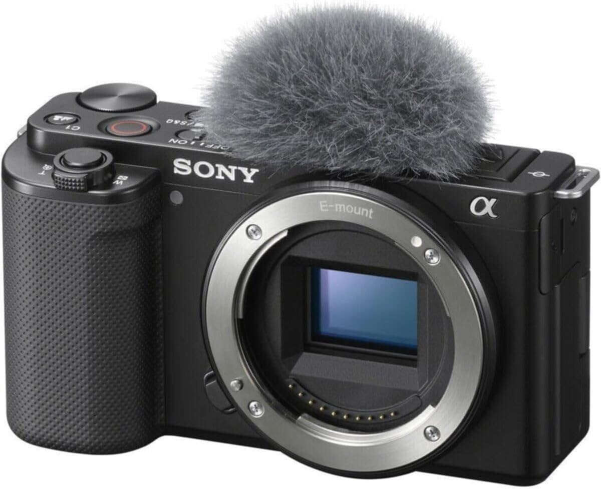

Per començarLlibre introductori sobre intel·ligència artificial
Ideal per a persones que volen entendre la IA des de zero, sense entrar directament en explicacions massa tècniques.
Veure a AmazonSelecció de llibres, dispositius, accessoris i recursos útils per aprendre intel·ligència artificial, automatitzar tasques, crear contingut i millorar la teva productivitat digital.

Per començarIdeal per a persones que volen entendre la IA des de zero, sense entrar directament en explicacions massa tècniques.
Veure a Amazon
Creació de contingutRecomanat per gravar continguts, formacions o vídeos sobre IA amb una qualitat d’àudio més professional.
Veure a Amazon
ProductivitatGrava reunions, converteix l’àudio en text i genera resums automàticament gràcies a la intel·ligència artificial. Una eina pràctica per estalviar temps, organitzar idees i no perdre informació important.
Veure a Amazon Dispositius IA
Dispositius IA
Ulleres intel·ligents amb funcions de traducció en temps real, assistents IA i control per veu. Un exemple interessant de com la intel·ligència artificial comença a integrar-se en dispositius quotidians i experiències mans lliures.
Veure a Amazon
Dispositius IAAuriculars amb intel·ligència artificial capaços de traduir converses en temps real entre múltiples idiomes. Un exemple pràctic de com la IA comença a eliminar barreres de comunicació en viatges, reunions i treball internacional.
Veure a Amazon
Dispositius IADescobreix anells intel·ligents i wearables amb intel·ligència artificial capaços de monitoritzar son, activitat física, estrès i salut en temps real. Tecnologia futurista aplicada a productivitat, benestar i automatització personal.
Veure a Amazon
Dispositius IADescobreix el PLAUD NotePin, un wearable ultralleuger de només 16,7 grams capaç de gravar converses, transcriure reunions i generar resums automàtics mitjançant intel·ligència artificial. Ideal per a productivitat, notes i automatització personal en temps real.
Veure a Amazon Dispositius IA
Dispositius IA
Un avançat bolígraf intel·ligent amb
intel·ligència artificial capaç de
escanejar textos, realizar
traduccions en temps real i oferir funcions
intel·ligents mitjançant tecnologia tipus
ChatGPT.
Aquest gadget futurista
incorpora pantalla tàctil HD, reconocimiento
OCR, traducció multillenguatge i eines ideals
per a estudiants, productivitat, feina i viatges.
✔ Escaneig intel·ligent OCR
✔ Traducció instantània multillenguatge
✔ Funcions IA tipus ChatGPT
✔ Pantalla tàctil integrada
✔ Gadget tecnològic futurista
 IA bàsica
IA bàsica
Llibre recomanat per iniciar-se en la intel·ligència artificial de manera clara i accessible. Ideal per a persones que volen entendre què és la IA, com funciona i com es pot aplicar a la feina, l’automatització i la vida quotidiana.
Veure a Amazon Programació
Programació
Aquest llibre és ideal per fer el salt des de Python bàsic al món de la intel·ligència artificial. Aprendràs a crear models de machine learning amb eines reals com Scikit-Learn i TensorFlow mitjançant exemples pràctics.
Veure a Amazon Automatització
Automatització
Selecció de llibres per aprendre a automatitzar tasques, optimitzar processos i estalviar temps amb eines reals. Ideal per aplicar automatització en empreses, botigues en línia i fluxos de treball sense intervenció manual.
Veure a Amazon Creació de contingut
Creació de contingut
El Hollyland Lark M2 Combo és un sistema de micròfon sense fils dissenyat per a creadors de contingut, YouTube, TikTok, entrevistes i streaming. Destaca per la seva mida extremadament compacta i lleugera, oferint un so clar i professional sense necessitat d’equips complexos. La versió Combo inclou compatibilitat amb càmeres, smartphones USB-C i dispositius Lightning, cosa que permet gravar fàcilment en pràcticament qualsevol entorn. A més, incorpora cancel·lació de soroll intel·ligent i un estoig de càrrega portàtil per millorar l’autonomia durant les gravacions. Ideal per a vídeos, reels, podcasts, entrevistes i contingut per a xarxes socials.
Veure a Amazon Creació de contingut
Creació de contingut
El Elgato Stream Deck + és un controlador
físic dissenyat per a creadors de contingut,
streamers, editors i usuaris que volen automatitzar
tasques de manera ràpida i senzilla. Incorpora
botons LCD personalitzables, controls giratoris i
pantalla tàctil per gestionar accions amb un sol
toc.
Permet controlar aplicacions,
canviar escenes en streaming, ajustar volum, llançar
automatitzacions, obrir eines d’IA o executar
accessos ràpids sense interrompre el flux de
treball. Ideal per a streaming, YouTube, edició de
vídeo, productivitat i automatització de contingut.

Creació de contingut
Amaran 200x S és un focus LED
professional de 200W pensat per a
creadors de contingut,
YouTube,
streaming, entrevistes i producció
audiovisual.
Destaca per oferir una
il·luminació potent, uniforme i amb colors naturals,
molt utilitzada en setups de vídeo professionals i
estudis de gravació.
Permet ajustar la
temperatura de color entre tons càlids i freds,
adaptant-se fàcilment a diferents estils de gravació
i ambients. A més, és compatible amb modificadors de
llum tipus Bowens per aconseguir resultats més
cinematogràfics.
Ideal para
YouTube, podcasts,
streaming, vídeos tecnològics,
entrevistes i creació de contingut professional.

Creació de contingut
Sony Alpha ZV-E10K és una càmera
mirrorless APS-C dissenyada especialment per a
creadors de contingut,
YouTube,
streaming, entrevistes i
videoblogs.
Incorpora un sensor APS-C de
24,2 MP, gravació de vídeo en 4K,
enfocament automàtic
Eye AF en tiempo real i objectius
intercanviables per aconseguir una imatge molt més
professional i cinematogràfica.
La seva
pantalla abatible facilita la gravació de vlogs i
contingut per a xarxes socials, mentre que el
micròfon direccional integrat millora la captura de
veu durant les gravacions.
Ideal per a
YouTube,
streaming, podcasts, entrevistes,
vídeos tecnològics i creació de contingut
professional.
 Creació de contingut
Creació de contingut
DJI Osmo Pocket 3 és una càmera
compacta dissenyada per a
creadors de contingut,
YouTube, vlogging,
viatges i vídeos per a xarxes socials.
Incorpora
un sensor d’1 polzada, gravació de vídeo en
4K i estabilització mecànica en 3
eixos per aconseguir imatges fluides i professionals
fins i tot gravant en moviment.
El seu
disseny compacte permet portar-la fàcilment a la
butxaca, mentre que la pantalla tàctil giratòria
facilita la gravació de contingut vertical i
horitzontal per a diferents plataformes.
Ideal
per a YouTube,
reels, TikTok,
viatges, entrevistes i creació de contingut
professional.
 Creació de contingut
Creació de contingut
RØDECaster Pro II és una consola de
producció d’àudio dissenyada per a
podcasts,
streaming, entrevistes i creació de
contingut professional.
Integra mesclador
d’àudio, gravadora, interfície USB i controls físics
en un únic dispositiu pensat per simplificar la
producció de contingut i millorar la qualitat del
so.
Incorpora pantalla tàctil, faders
professionals, pads programables i connectivitat per
a micròfons, auriculars, ordinadors i dispositius
mòbils, permetent gestionar gravacions i directes
des d’un sol equip.
Ideal per a
podcasts, YouTube,
streaming, entrevistas, estudis de
gravació i setups professionals de creació de
contingut.
Molt útil per treballar amb IA, documentació, automatitzacions i diverses eines obertes al mateix temps.
Veure a AmazonUna millora senzilla per treballar més còmode durant moltes hores creant contingut, programant o automatitzant tasques.
Veure a AmazonPer millorar la postura i la comoditat si treballes moltes hores davant de l’ordinador.
Veure a AmazonNo presentem aquests productes com una botiga pròpia ni tenim estoc. Són recomanacions seleccionades per a persones interessades en intel·ligència artificial, automatització, formació digital i productivitat.
Abans de comprar, revisa sempre les característiques, opinions, preu actualitzat i condicions directament a Amazon.